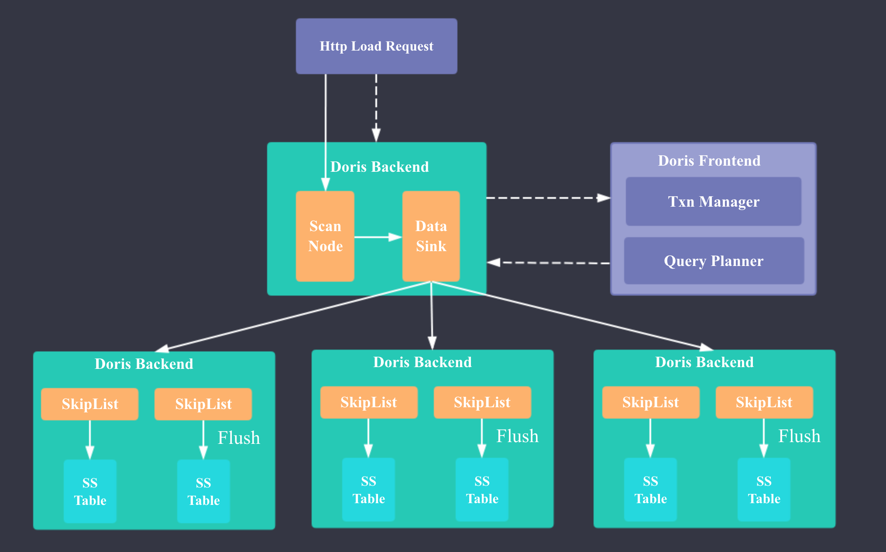
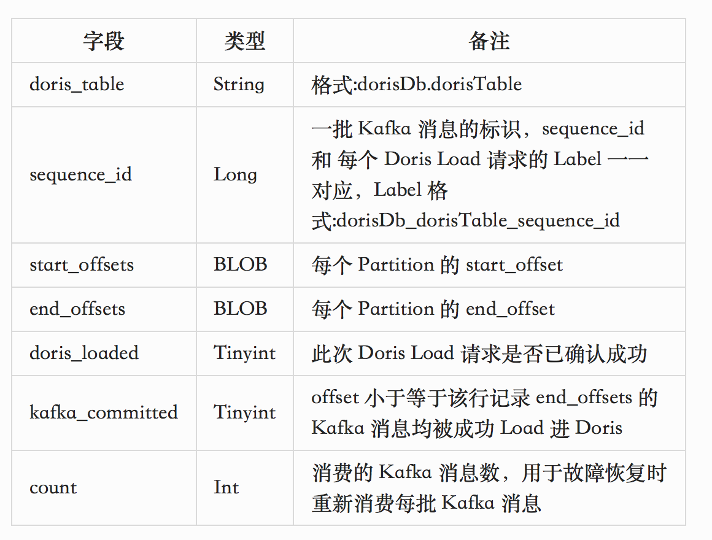

Apache Doris Stream Load & Kakfa To Doris
作者: 康凯森
日期: 2019-01-01
分类: OLAP
Doris 最新版本已经支持 Stream Load，本文简介下 Doris Stream Load 的核心原理以及我如何在 Doris 外围实现 Exactly Once 的 Kafka To Doris 实时数据同步。
Doris Stream Load 原理

Doris Stream Load 实现的核心思想和 HBase，Druid 比较类似：在内存中实现一个面向写优化的 MemTable(MemStore)，当 MemTable 的大小超过一定阈值时，进行 flush，将 MemTable 转为带有前缀索引的 SSTable（HBase 中是将 MemStore 转为 HFile, Druid 中是将 Map 转为带倒排索引的 Segment）
Doris 新增了 GlobalTransactionMgr 来保证单次 Stream Load 的原子性。
Doris Stream Load 流程
下面我简介下 Doris 一次 Stream Load 的流程：
- 用户发起 Stream Load 的 Http 请求
- FE 经过鉴权后将请求转发给 1 台 BE
- BE 向 FE 发起 loadTxnBegin 开始事务的请求
- FE 的 GlobalTransactionMgr 开启事务，事务状态标记为 PREPARE，向 BE 返回 txnId
- BE 向 FE 发起 streamLoadPut 请求
- FE 的 StreamLoadPlanner 生成 Stream Load 的 Plan：Stream Load 的 Plan 只有一个 fragment， 包含一个 StreamLoadScanNode 和 一个 OlapTableSink，StreamLoadScanNode 负责摄入实时数据，OlapTableSink 负责将实时数据发送到每条数据对应的 Tablet 所在的 BE 节点（每条数据对应哪个 Tablet 是根据 PartitionKey 和 DistributionKey 确定的，每个 Tablet 对应哪些 BE 是在建表或建 Partition 时就确定的）
- BE 执行 Stream Load 的 Plan: BrokerScanNode 实时读取流式数据，并将 CSV 格式的数据转为 Doris 的 Tuple 格式，OlapTableSink 将数据发送到对应的 BE 节点。 数据接收节点的 BE 的 TabletsChannel 会调用 DeltaWriter 将数据插入到内存的 MemTable，MemTable 的数据结构是 SkipList，当 MemTable 的数据大小超过 config::write_buffer_size 时，会触发 flush 操作，转为列存。
- 当 Stream Load 结束时，BE 向 FE 发起 loadTxnCommit 请求
- FE commit 事务，事务状态标记为 PREPARE， 发布 PublishVersionTask，更新 Table 元数据。
- BE 执行 PublishVersionTask，将刚才 flush 的实时数据移至每个 Tablet 对应的数据目录下，更新每个文件的元数据
- FE 等待 PublishVersionTask 执行完成，将事务状态置为 VISIBLE，向 BE 返回 loadTxnCommit 的执行结果
- BE 向用户返回此次 Stream Load 的结果，Stream Load 结束。
Doris Stream Load FAQ
- Doris Stream Load 内存中的数据会进行聚合吗？
会的，当数据在插入到内存的 SkipList 时，Aggregate 模型 和 Uniq 模型的数据会进行聚合
- Doris Stream Load 刚插入内存中的数据可查吗？
不可查， 和 HBase,Druid 不同，Doris 只有每次 Stream Load 的事务状态变为 VISIBLE 后，数据才可查。Doris 目前并没有实现内存中数据的 Scanner。
- Doris Stream Load 时 BE 节点挂掉 会怎样？
如果是和此次 Stream Load 无关的 BE 节点，肯定不会受影响；
如果是负责数据摄入的 BE 节点挂掉，此次 Stream Load 会失败，事务会标记为 ABORTED；
如果是数据所在的 BE 节点超过半数挂掉，此次 Stream Load 会失败，事务会标记为 ABORTED。
- Doris Stream Load 时 FE 节点挂掉 会怎样？
因为 FE 的 Master 节点是事务管理者，中间会有多次 BE 和 FE 的请求交互，如果 FE 的 Master 节点在 BE 请求时挂掉，此次导入也会失败。FE 的非 Master 节点挂掉应该不会有啥影响。
- Doris Stream Load 的数据源格式？
CSV 格式，默认的列分隔符是 '\t',行分隔符是 '\n'。列分隔符可以自定义。
Kafka To Doris
目前 Doris 社区最新版已经提供了Stream Load 的能力，可以通过 Http 接口进行流式数据的实时导入，但是还没有对接 Kafka 等数据源。
而我司用户对 Kafka To Doris 实时导入的需求十分迫切，所以我在 Doris 外围实现了 Kafka To Doris 的 Exactly Once 实时数据同步。
方案设计

如上图所示，Kafka To Doris 的功能是由 Doris-Load 这个 Java 进程实现，该进程可以运行在任意可以 ping 通 Kafka 集群和 Doris 集群的节点上。
Doris-Load 进程包含以下 5 类线程：
- Main Thread： 配置解析，获取 Doris Column 元数据，获取 Kafka Topic 元数据，修复空洞 Offset 数据，获取消费的 Offset 并 Seek
- Consume Thread： 从 Kafka 持续 Pull 数据，达到 buffer_size 或一定时间后 启动 Send Thread；周期性检查 Kafka 的 Partition 变更
- Send Thread：根据 Doris Column 元数据将 Kafka 数据转换为 CSV 格式，并通过 Http 请求发送到 Doris
- Commit Thread：将 Mysql Meta 表中已经连续成功 Load 进 Doris 的最大sequence_id对应记录的 kafka_committed 置为 1，并删除小于此 sequence_id 的所有记录
- Add Partition Thread: 对于分区的 Doris 表，需要周期性新建 Partition
Mysql Meta Schema

核心数据结构
OffsetsRecord: 代表 Mysql Meta 中一行记录List<String> recordsBuffer: 待发送的一批 Kafka ConsumerRecordLong curSequenceId: 当前的 SequenceIdLong lastCommittedSequenceId: 所有小于等于 lastCommittedSequenceId 的 SequenceId 对应的 Kafka 消息已成功 Load 进 Doris， 也意味着在 Mysql Meta 中所有 SequenceId 小于等于 lastCommittedSequenceId 的记录都可以删除Map<Long, OffsetsRecord> pendingRecords: 等待 Doris response 的 Kafka Record，key 是 SequenceIdList<Long> pendingCommittedIds: SequenceId 对应的数据已经成功 Load 进 Doris，等待更新 Mysql Meta 中的 kafka_committed 字段
如何保证 Exactly Once
保证 Kafka 数据的 Exactly Once 消费等价于同时保证消费 Kafka 数据不丢且不重。
如何保证消费 Kafka 数据时不丢？
精确记录 Kafka 消费的 Offset，只有在确认 Kafka 消息成功被 Doris 消费时，对应的 Kafka 消息才会在 Mysql Meta 中被标记为 Committed。
如何保证消费 Kafka 数据时不重？
核心是借助 Doris Stream Load 的 Label 机制： Doris 的每个 Stream Load Http 请求可以增加一个 Label 的 Http Header，Doris 可以保证相同 Label 的数据在 7 天（可配置）内只能 Load 一次，重复提交会报错，而且可以根据 Label 查询每个 Load 请求的状态。
所以我们只需要让 Load 请求的 Label（dorisDb_dorisTable_sequence_id）和 Kafka 消息的 offsets 严格对应，就可以保证不会重复消费 Kafka 的消息，即使当 后发送的 Http 请求成功但是先发送的 Http 请求失败时 也可以保证。
正常的数据处理流
- curSequenceId 自增，curOffsetsRecord 初始化。
- Consume Thread
- 从 Kafka 持续 Pull 数据
- 将 Kafka record 放入 recordsBuffer
- 如果 recordsBuffer 达到 buffer_size 或是 达到一定时间，启动 Send Thread
- curSequenceId 自增，curOffsetsRecord 和 recordsBuffer 初始化。
- Send Thread
- 根据 Doris Column 元数据将 Kafka 数据转换为 CSV 格式
- 更新 curOffsetsRecord 的 startOffsets 和 endOffsets
- Mysql Meta 中插入 curOffsetsRecord 记录;将 curSequenceId 和 curOffsetsRecord 插入 pendingRecords
- 发送 Http Load 请求到 Doris
- Mysql Meta 中 更新 doris_loaded 字段 为 1，pendingCommittedIds 中插入当前请求的 SequenceId
- Commit Thread
- 周期性 check pendingCommittedIds 的 size,如果超出阈值，则再 check lastCommittedSequenceId 之后的连续 60 个 SequenceId 对应的数据是否已成功 Load 进 Doris，如果是，则更新 Mysql Meta 中第 lastCommittedSequenceId + 60 个 OffsetsRecord 的 kafka_committed 为 1，并删除所有 SequenceId 小于 lastCommittedSequenceId + 60 的记录
初始化过程
- 从 Doris 获取 Column 元数据。
- 从 Kafka 获取 Topic 的 Partition 元数据。
- 如果是第一次启动，根据配置决定是 seekToBeginning 还是 seekToEnd，启动 Consume Thread，进入正常的数据处理流。否则进入第 4 步。
- 获取 Mysql Meta 表中所有 doris_loaded 为 0 的 OffsetsRecord，从 Doris 检查每个 OffsetsRecord 的状态，如果成功则更新 Mysql Meta 表，如果失败，则重新从 Kafka 中消费指定 offsets 的 record，并同步发送 Load 请求到 Doris，失败则进程退出，成功则更新 Mysql Meta 表。
- 从 Mysql Meta 表获取最后一条成功 Load 进 Doris 的 OffsetsRecord，根据 OffsetsRecord 的 endOffsets seek 到下一个 Offset，启动 Consume Thread，进入正常的数据处理流。
实现细节
- 如何处理 Kafka Partition 变更
定期 check Kafka topic 的 Partition 数量，如果发现有变化，则重新 assign。
- 如何处理 Doris Schema 变更
目前需要重启 Doris-Load 进程。 后续可以考虑将 Doris 建模和 Doris-Load 进程的管理集成到一个系统（Doris 管理平台），做到用户在 Schema 变更后，自动重启 Doris-Load 进程。
- 如何处理错误数据
根据配置决定是否可以容忍错误数据，如果不可以容忍，则 Doris-Load 进程退出；否则每批数据可以容忍指定百分比的错误数据。
- 如何加速 Json 解析
目前 Doris-Load 进程最耗 CPU，最慢的部分就是 Kafka 消息的 Json 解析。 我 Json 解析用的是 Jackson 框架，开始时是直接把 Json 当做一个 map 来解析，后来发现在实际使用中 Doris 的字段数是很有可能小于 Kafka 的字段数的，所以就采用了运行时根据 Doris 的元数据动态生成类，让 Jackson 根据生成的类解析 Json 的方式。这种方式不仅可以提高解析速度，同时还可以更容易的保证导入时列的顺序，进行 Null 值的处理。
- 如何处理 FE 和 BE 重启的 Case
由于 Doris 的 Http Load 有 label 机制，所以每次 Http Load 是幂等的，所以我们可以 Catch FE 或 BE 连接失败的异常，并进行重试。
- 如何用 0.10 的 kafka 客户端消费 0.8 的 Kafka 数据
让 0.10 的 KafkaConsumer 使用 V0 版本的 API，即可支持 0.8 的 Kafka 集群，同时需要保证每次在 assign 和 seek 时必须包含所有的 partition，否则在 pull 数据时会触发 updateFetchPositions 逻辑，就会报 SchemaException。
总结
Kafka To Doris 在我司12月6号已上线，目前线上已运行了10多个同步流程，期间也完善了一些异常处理，监控报警。后续会参考 Druid Kafka Indexing Service 启动一个 Service，暴露以下 API： 管理 Doris-Laod 进程的启动，关闭和重启；查看每个 Doris-Load 进程的存活状态，消费状态。
欢迎来知识星球和我交流